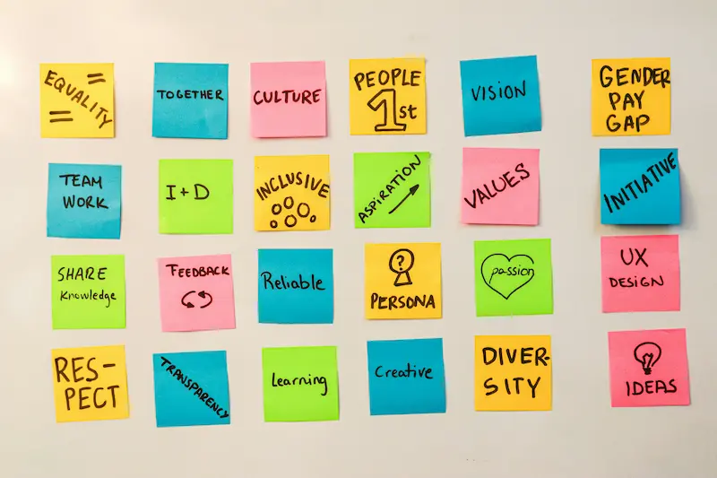

Mi historia en programación

El proyecto de grados que debía desarrollar para la tecnica en sistemas que curse me llevó a aprender a programar de forma autodidacta. Junto con mi equipo de trabajo decidimos desarrollar una cerradura inteligente con los conocimientos adquiridos en electronica. De la forma que pensabamos llevar a cabo el proyecto nos exigia interactuar con bases de datos y eso fue lo que me llevó a iniciar en la programación con el lenguaje de programación Python.
Al graduarme de la técnica y el bachillerato en 2020, me di cuenta de lo apasionante que es para mi la programación y de la capacidad que poseo para aprender de forma consistente como autodidacta con recursos online (principalmente YouTube).
Desde entonces he aprendido y me he desempeñado usando diferentes lenguajes, tecnologías y conceptos entre las que se encuentra JavaScript, TypeScript, Astro, Angular, NestJS, Node.js, Git, GitHub, Figma, Diseño UI/UX, Accesibilidad, TailwindCSS, Bootstrap CSS, entre otras.
Valores
Organización: Una de las claves de la productividad es mantener la paz mental y tranquilidad de saber donde encontrar los recursos o dependencias necesarias para realizar una tarea o trabajo. La organización te permite crear esa paz mental y tranquilidad
Comunicación: Comunicarse de forma efectiva y explicita facilita las relaciones interpersonales y el trabajo en equipo. Crea un entorno a través del cual un equipo fluye y se dirige hacia un mismo objetivo de manera efectiva y rápida. Ayuda a eliminar frustraciones y malentendidos haciendo que todos trabajemos y vivimos más felices.
Empatía: Comprender que las personas viven y pasan por diferentes situaciones en sus vidas y que estas hacen que sientan, piensen y actuen de diferentes formas, te permite ponerte en sus zapatos y poder ayudarlos o colaborarles efectivamente.
Mi rutina diaria en las mañanas
- Tender la cama
- Limpiar tennis usados el día anterios
- Hacer el desayuno
- Ver videos de programación en YouTube
- Tomar ducha
- Preparar el almuerzo
- Alistarme para salir a Riwi